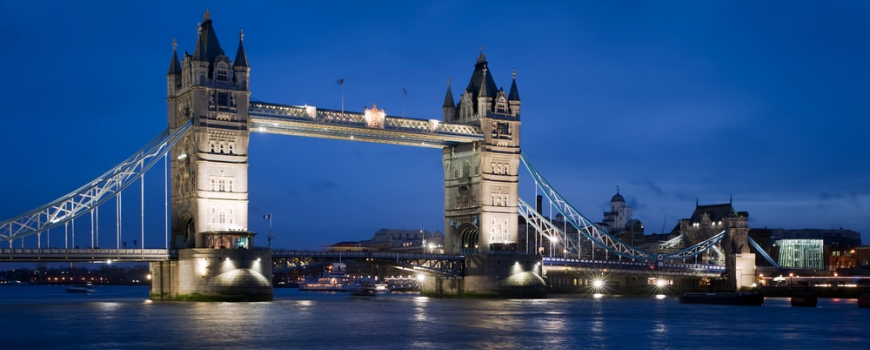

What is a bridge?
A bridge is a structure built to span physical obstacles without closing the way underneath such as a body of water, valley, or road, for the purpose of providing passage over the obstacle.
History
The first bridges made by humans were probably spans of cut wooden logs or planks and eventually stones, using a simple support and crossbeam arrangement. Some early Americans used trees or bamboo poles to cross small caverns or wells to get from one place to another. Click Here to learn more about bridges!
| Bridges around the World | ||
|---|---|---|
| New York, NY | London, England | San Francisco, CA |
|  |  |
|
| The Brooklyn Bridge is an hybrid cable-stayed/suspension bridge. It has a main span of 1,595.5 ft (486.3 m), and was the first steel-wire suspension bridge constructed.
Total length: 5,989 ft (1,825.4 m). |
The Tower Bridge was built between 1886 and 1894, and combines elements of a suspension bridge design with elements of a bascule bridge design.
Total length: 801 ft (244 m). |
The Golden Gate Bridge opened in 1937 and was, until 1964, the longest suspension bridge main span in the world, at 4,200 ft (1,300 m).
Total length: 8,981 ft (2,737.4 m). |
| Naranjito, PR | ||
| The Jesus Izcoa Moure Bridge is a cable-stayed bridge, opened in 2008. Is supported by two diamond-shaped towers and 96 fan-shaped cables. Total length: 2,306 ft (703m). |
||
Facts
- Common types of bridges include beam bridges, arch bridges, suspension bridges, cantilever bridges, truss bridges, and cable-stayed bridges.
- Bridge designs depend on their intended function, financial resources and also the type of terrain where they are constructed.
Curiosities
Do you know that the longest central span of any suspension bridge in the world is the Akashi Kaikyo Bridge (Kobe, Japan), at 6,532 ft (1,991 m)?
Total length: 12,831 ft (3,911 m).